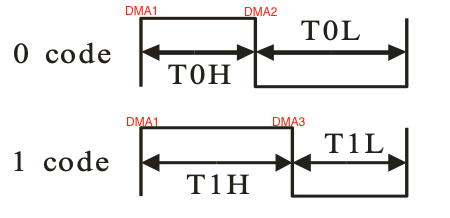

Key features:
- No FPS limit except for what is with the pixel chip protocol.
- Full Art-Net 4 implementation including ArtTrigger for running test patterns.
- Full sACN E1.31 implementation.
- Discovery and network configuration with RDMNet LLRP Only.
- Central remote configuration based on UDP readable messages.
- Configuration management with HTTP/JSON. This includes discovery as well.
- Enable TFTP server for uploading new firmware.
Support for:
- All RTZ protocol pixel’s. There are some predefined chip’s, for example WS2812B.
When other timing is needed, then it can be set with any low-code and high-code.
- Clock based protocol pixel’s: APA102, SK9822 and P9813.
Quick links:
Timer->DMA->GPIO
There are 2 timer’s used in a master-slave mode. The master is
generating the DMA requests and the slave is the pixel buffer counter.
There is just one interrupt. This makes it the most efficient
implementation possible. For the RTZ protocol there are 3 DMA
requests:
- Always the HIGH output.
- The LOW when there must be a 0 code.
- Always the LOW output after T1H.
|
 |
Timers used
| 2 |
Master -> TIMER2_TRGO |
| 3 |
Slave -> ITI2 |
SPI/I2S
As the SPI speed cannot be specified exaclty, the I2S peripheral is used instead.
SPI speed =
I2S bitrate = Audio sample rate * number of
bits per channel * number of channels. Therefore, the Audio sample
rate = SPI speed / 16 / 2. For the WS2812B type protocol, the SPI
speed must be (close to) 6.4Mhz.
Clock tree
| MCU |
CK_SYS |
CK_I2S |
| GD32F103RC |
108MHz |
108MHz |
| GD32F303RC |
120MHz |
120MHz |
| MCU |
CK_SYS |
HXTAL |
PREDV1 |
PLL2MF |
CK_PLL2 |
x2 |
CK_I2S |
| GD32F107RC |
- |
25MHz |
/5 |
x16 |
80Mhz |
√ |
160Mhz |
| GD32F207RG |
- |
25MHz |
/5 |
x16 |
80Mhz |
√ |
160Mhz |
| GD32F207VC |
- |
25MHz |
/5 |
x16 |
80Mhz |
√ |
160Mhz |
I2S prescaler Configuration
- Frame format: DT16B CH16B
- Number of bit per channel: 16
- Number of channels: 2
- Audio sample rate: 200kHz = 6400000 Hz / 16 / 2
- MCK out: Disable
I2S bitrate = CK_I2S / (DIV * 2 + OF)
| MCU |
CK_I2S |
DIV |
OF |
I2S bitrate |
| GD32F103RC |
108MHz |
8 |
1 |
6.352.941 |
| GD32F107RC |
160Mhz |
12 |
1 |
6.400.000 |
| GD32F207RG |
160Mhz |
12 |
1 |
6.400.000 |
| GD32F207VC |
160Mhz |
12 |
1 |
6.400.000 |
| GD32F303RC |
120MHz |
9 |
1 |
6.315.790 |
Development board 16x 4U, 2x DMX Out
GitHub:
GD32F450 Pixel DMX512 board